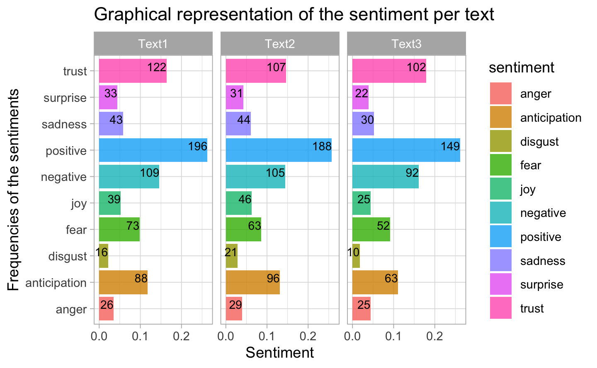

Chapter 3 Sentiment Analysis
3.1 Analysis with the “nrc” library
We use the “nrc” dictionary to start our sentiment analysis on the discourses of our two politicians. It is a dictionnary qualifying tokens by specific sentiments and by labelling them “negative” or “positive”.
To do so, we will match the tokens of both corpuses with the dictionnary by applying an inner join. However, to use the inner_join function, we need a table object, what our objects are not primarily. We reload the data to create objects specific to this stage, boris_2 and macron_2, which are registered as tibble and allowing the use of the inner_join function. From the token list per document boris.tok, we join the corresponding qualifier in nrc using an inner_joint:
#####################################################################################################################################
########################################## Let's start with the Boris Johnson's discourses ######################################
#####################################################################################################################################
boris_2<-as.tibble(
c(boris9mars,
boris12mars,
boris16mars,
boris18mars,
boris19mars,
boris20mars,
boris22mars)) # trick to get a "tbl_df","tbl","data.frame" compatible with the inner_join functionDocumentB <- c("Text1","Text2","Text3","Text4","Text5","Text6","Text7") # adding a column "Document" to have a landmark for the tokens
boris_2$Document <- DocumentB
boris_2 <- boris_2[,c(2,1)]
boris_2.tok <- unnest_tokens(boris_2,
output="word",
input="value",
to_lower=TRUE,
strip_punct=TRUE,
strip_numeric=TRUE) # unnest tokens of the table
boris_2.sent<- boris_2.tok %>%
inner_join(get_sentiments("nrc")) # do the inner join to merge the two tables
######################################################################################################################################
########################################## Let's continue with the Macron's discourses ###########################################
######################################################################################################################################
macron_2<-as.tibble(
c(macron12march,
macron13april,
macron16march)) # trick to get a "tbl_df","tbl","data.frame" compatible with the inner_join function
DocumentM <- c("Text1","Text2","Text3") # adding a column "Document" to have a landmark for the tokens
macron_2$Document <- DocumentM
macron_2 <- macron_2[,c(2,1)]
macron_2.tok <- unnest_tokens(macron_2,
output="word",
input="value",
to_lower=TRUE,
strip_punct=TRUE,
strip_numeric=TRUE) # unnest tokens of the table
macron_2.sent<- macron_2.tok %>%
inner_join(get_sentiments("nrc")) # do the inner join to merge the two tablesAfter creating our objects, we investigate which sentiment are present in Boris Johnson’s discourses. To do so, we use a numerical and a graphical method.
The numerical method is simply a matrix of the frequency of tokens identified to a certain sentiment. Remind that a word can have more than 1 sentiment, which can lead to slight an overestimation of the sentiment.
The table below presents positive discourses from the UK’s First Minister which are mainly weighted by the sentiment “trust”. We could have assumed that the discourse would be reassuring in order to avoid any panic due to the inedite circumstances of the covid. “Anticipation” is as well high, for the same reason (annoucement of the futures measures ans aaniticpations of the consequences, e.g.)
However, postive sentiments are balanced by the relative high score of the fear, followed by disgust and anger. In absolute values, the most sentimental discourse was the second public word, on March 12th 2020.
The graphical representations of the sentiments among discourses enables us a quick glimpse on these results. The discourses of the Prime Minister are animated by the current need. As said before, our data sets include 7 speeches in 14 days: the Prime Minister speaks more often in order to monitor a close relationship with UK citizen while given the daily progress in the covid-19 handling.
| anger | anticipation | disgust | fear | joy | negative | positive | sadness | surprise | trust | |
|---|---|---|---|---|---|---|---|---|---|---|
| Text1 | 7 | 14 | 5 | 15 | 4 | 14 | 33 | 7 | 4 | 24 |
| Text2 | 16 | 33 | 17 | 33 | 8 | 35 | 63 | 22 | 7 | 45 |
| Text3 | 12 | 16 | 14 | 25 | 10 | 23 | 46 | 15 | 8 | 31 |
| Text4 | 11 | 24 | 8 | 14 | 9 | 20 | 50 | 11 | 8 | 35 |
| Text5 | 11 | 18 | 10 | 19 | 8 | 24 | 30 | 12 | 5 | 19 |
| Text6 | 8 | 17 | 6 | 14 | 9 | 22 | 45 | 8 | 2 | 35 |
| Text7 | 3 | 13 | 4 | 12 | 8 | 13 | 26 | 4 | 3 | 23 |
The graphical representation of the sentiments among discourses enables us a quick glimpse on these results.
boris_2.sent %>%
group_by(Document,sentiment) %>%
summarize(n=n())%>%
mutate(freq=n/sum(n)) %>%
ggplot(aes(x=sentiment,y=freq,fill=sentiment)) +
geom_bar(stat="identity",alpha=0.8) +
facet_wrap(~ Document) +
coord_flip() +
ggtitle("Boris Johnson: Graphical representation of the sentiment per text") +
xlab("Frequencies of the sentiments") +
ylab("Sentiment") +
geom_text(aes(label = n), size = 3, hjust = 1, vjust = 0, position = "stack")Figure 3.1: Boris Johnson: Graphical representation of the sentiment per text
By looking now at the discourses of Macron using the same method, we note the seemingly same frequencies of sentiments in the table below. His words appear to be carefully built and the variance is very low, perhaps to give the impression to have a stable and coherent speeches overtime.
The categories of sentiments are quite similarly distributed: the speeches are positive marked by trust and anticipation.
The proportions in the barplots are the same for speech 1, 2, and 3. We might assume they are based on a specific inner structure. The construction of text The French President would read is cautiously studied. This point, combined with the observation on the length, is interesting: Emmanuel Macron speaks more during less public orations, in order to have more powerful public interventions
| anger | anticipation | disgust | fear | joy | negative | positive | sadness | surprise | trust | |
|---|---|---|---|---|---|---|---|---|---|---|
| Text1 | 26 | 88 | 16 | 73 | 39 | 109 | 196 | 43 | 33 | 122 |
| Text2 | 29 | 96 | 21 | 63 | 46 | 105 | 188 | 44 | 31 | 107 |
| Text3 | 25 | 63 | 10 | 52 | 25 | 92 | 149 | 30 | 22 | 102 |
macron_2.sent %>%
group_by(Document,sentiment) %>%
summarize(n=n())%>%
mutate(freq=n/sum(n)) %>%
ggplot(aes(x=sentiment,y=freq,fill=sentiment)) +
geom_bar(stat="identity",alpha=0.8) +
facet_wrap(~ Document) +
coord_flip() +
ggtitle("Graphical representation of the sentiment per text") +
xlab("Frequencies of the sentiments") +
ylab("Sentiment") +
geom_text(aes(label = n), size =3, hjust = 1, vjust = 0, position = "stack")
3.2 Analysis with the LSD2015 dictionnary
In order to better analyse those results and fortify those insights, we double check with the dictionnary LSD2015. It is another dictionnary assigning a qualifier to terms. The difference with tidytext is essentially in the manipulation of the objects: it handles the “tokens” class and for this reason we have to recode our objects. The results are impacted by this different treatment and we do expect slight changes.
As the figure 3.2 shows, the results of Text 2 as the most positive and all the discourses as majoritarily positive are confirmed. For Macron’s speeches, the proportions of sentiments differs: the first discourse is associated with more postive sentiment (224) relatively to proportion computed with the “nrc” dictionnary (193). However, the trend remains the same.
We keep in mind that difference in length of texts explains the varying size of the bar, as previously. Anyway both findings converge to the same points.
######################################################################################################################################
########################################## Let's start with the Johnson's discourses ###########################################
######################################################################################################################################
boris.cp<-corpus(c(boris9mars,boris12mars,boris16mars,boris18mars,boris19mars,boris20mars,boris22mars))
summary(boris.cp)| Text | Types | Tokens | Sentences |
|---|---|---|---|
| text1 | 266 | 609 | 23 |
| text2 | 409 | 1222 | 50 |
| text3 | 405 | 1231 | 43 |
| text4 | 406 | 1230 | 52 |
| text5 | 321 | 994 | 37 |
| text6 | 357 | 1030 | 47 |
| text7 | 300 | 793 | 35 |
boris.tk<-tokens(boris.cp,
remove_numbers = TRUE,
remove_punct = TRUE,
remove_symbols = TRUE,
remove_separators = TRUE)
boris.tk<-tokens_tolower(boris.tk)
boris.tk<- tokens_replace(boris.tk,pattern = hash_lemmas$token, replacement = hash_lemmas$lemma)
boris.tk<-boris.tk %>%
tokens_remove(stopwords("english"))
boris.sent<- tokens_lookup(boris.tk,dictionary = data_dictionary_LSD2015) %>% dfm() %>% tidy
boris.plot.quanteda <- ggplot(boris.sent, aes( x = document, y = count, fill = term)) +
geom_bar(stat = "identity") + coord_flip() +
ggtitle("Johnson: Proportion of sentiment using the dictionnary LSD2015") +
xlab("Document") +
ylab("Number of terms attributed to negative and positive sentiments") +
geom_text(aes(label = count), size =3, hjust = 5, vjust = 0, position = "stack")
######################################################################################################################################
########################################## Let's continue with the Macron's discourses ###########################################
######################################################################################################################################
macron.cp<-corpus(c(macron12march,macron13april,macron16march))
macron.tk<-tokens(macron.cp,
remove_numbers = TRUE,
remove_punct = TRUE,
remove_symbols = TRUE,
remove_separators = TRUE)
macron.tk<-tokens_tolower(macron.tk)
macron.tk<- tokens_replace(macron.tk,pattern = hash_lemmas$token, replacement = hash_lemmas$lemma)
macron.tk<-macron.tk %>%
tokens_remove(stopwords("english"))
macron.sent<- tokens_lookup(macron.tk,dictionary = data_dictionary_LSD2015) %>% dfm() %>% tidy
macron.plot.quanteda<- ggplot(macron.sent, aes( x = document, y = count, fill = term)) +
geom_bar(stat = "identity") + coord_flip() +
ggtitle("Macron: Proportion of sentiment using the dictionnary LSD2015") +
xlab("Document") +
ylab("Number of terms attributed to negative and positive sentiments") +
geom_text(aes(label = count), size =3, hjust = 5, vjust = 0, position = "stack")
grid.arrange(boris.plot.quanteda,macron.plot.quanteda)Figure 3.2: Proportion of sentiment using the dictionnary LSD2015
3.3 Analysis with the “afinn” dictionnary
We now use a different approach: a quantitative way to assess the sentiment analysis. To do so, we use the “afinn” dictionnary which attributes a value to the word, taking into account the power conveyed by the term (value between 0 and 1) and its qualitative classification (positive or neagtive sign). The classification of the words was encoded differently than for the “nrc” dictionnary. Again, we do expect different scores, but hopefully in the same direction.
The results displayed by the figure 3.3 are derived from an average score of sentiment per document. For the Boris Johnson’s speeches, the second one has a contradictory score with the previous results: it belongs to the lowest scored text in positive sentiments.
We can thus observe the difference in encodage among dictionnaries used in Text Mining. The “afinn” dictionnarywas encoded by a Danish Professor, LSD2015 by two American professors, and “nrc” by a Canadian professors working in an Commision on Ethics. The categorization is subjective and lead to substantial differences. Those results need to be mitigate by a last approach: the use of valence shifters.
######################################################################################################################################
########################################## Let's continue with the Johnson's discourses ###########################################
######################################################################################################################################
boris_2.sent <- boris_2.tok %>%
inner_join(get_sentiments("afinn"))
boris.plot.afinn<-aggregate(value~Document, data =boris_2.sent,FUN=mean) %>%
ggplot(aes(x=Document,y=value, fill = Document)) +
geom_bar(stat="identity") +
coord_flip() +
ggtitle("Johnson: Sentiment score per text by using afinn dictionnary") +
ylab("Document") +
xlab("Score value")
######################################################################################################################################
########################################## Let's continue with the Macron's discourses ###########################################
######################################################################################################################################
macron_2.sent <- macron_2.tok %>%
inner_join(get_sentiments("afinn"))
macron.plot.afinn <- aggregate(value~Document, data =macron_2.sent,FUN=mean) %>%
ggplot(aes(x=Document,y=value, fill = Document)) +
geom_bar(stat="identity") +
coord_flip() +
ggtitle("Macron: Sentiment score per text by using afinn dictionnary") +
ylab("Document") +
xlab("Score value")
grid.arrange(boris.plot.afinn,macron.plot.afinn)Figure 3.3: Graphical representation: Sentiment score per text by using afinn dictionnary
3.3.1 Analysis using “nrc”" dictionnary and valence shifters
The sentimentr library offers some function to compute sentiments integrating valence shiters. There are specific words which amplify or reduce the power of a word, even turn it into the reverse sentiment. We evaluate sentences here, and one important aspect is that it cannot be applied to a Bag Of Word model, since the word order is necessary.
The valence shifters extract more acurately the sentiment ouf of the text, since it consider the sentiment conveyed by a sentence and not only words without context. We should take the insights given by valence shifters as the ultimate confirmation test for the previous results. The results are displayed by the plot 3.4.
The second discourse of the Prime Minister here is one of the longest: it contains about 50 sentences and is only preceded by the fourth public word, on March 18th. It is the one varying the most in sentiment, what might explains the dffference in values observed between LSD2015&nrc with afinn dictionnary. Why? Simply because it was the first speech speaking openly about the covid and the serious measures to take. The sixth one shows one positive peak, what correspond to the moment whn Boris Johnson strengthened the measures and made a speech to reassure UK citizen. At this time, the measures taken weremore rigid: thre spread of the virus had intensifyied. He brought information with positive sentiments to unify the population under the new circumstances and to push the to obey by showing them the positive impact of respecting stonger measures.
Macron’s speeches are well longer, three times more than Boris Johnson’s ones, as we observe in the second plot. His words are generally more neutral but convey sometimes strong negative sentiments, like the 4th sentence. Actually, this sentence is not strongly negative but uses terms which are: “In the vast majority of cases, COVID-19 does not pose a threat, but the virus can have very serious consequences, especially for those of our fellow citizens who are elderly or suffer from chronic illnesses such as diabetes, obesity or cancer”. The variation of the sentiments is greater in the last allocution, on April 13th 2020. Serious + consequences, chronic + illness, diabete+ obesity + cancer aside amplify the seriousness of the sentence. We observe as well a greater variation in sentiments the last allocution of Emmanuel Macon, on April 13th 2020. It corresponds to the moment when the situation became critical in France. The President emphasizes the serious danger of the covid, the sanitary situation being worse than in UK.
boris.text<-get_sentences(boris)
boris.senti<-sentiment(boris.text)
boris.senti<-as_tibble(boris.senti)
boris.senti%>% group_by(element_id) %>%
ggplot(aes(x=sentence_id,y=sentiment, col = element_id )) +
geom_line() +
facet_wrap(~element_id) +
ggtitle("Johnson: Evolution of the sentiments \nwithin speeches using valence shifters") +
ylab("Document") +
xlab("Sentences in speeches")
######################################################################################################################################
########################################## Let's continue with the Macron's discourses ###########################################
######################################################################################################################################
macron.text<-get_sentences(macron)
macron.senti<-sentiment(macron.text)
macron.senti<-as_tibble(macron.senti)
macron.senti%>% group_by(element_id) %>%
ggplot(aes(x=sentence_id,y=sentiment, col = element_id )) +
geom_line() +
facet_wrap(~element_id) +
ggtitle("Macron: Evolution of the sentiments \nwithin speeches using valence shifters") +
ylab("Document") +
xlab("Sentences in speeches")Figure 3.4: Evolution of the sentiments within speeches using valence shifters